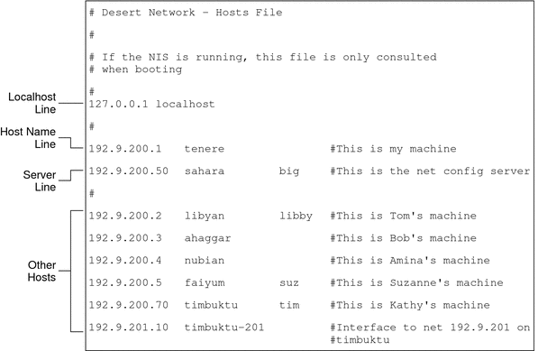

|
|||
|
1. Solaris TCPIP Protocol Suite (Overview) 2. Planning an IPv4 Addressing Scheme (Tasks 3. Planning an IPv6 Addressing Scheme (Overview) 4. Planning an IPv6 Network (Tasks) 5. Configuring TCP/IP Network Services and IPv4 Addressing (Tasks) 6. Administering Network Interfaces (Tasks) 7. Enabling IPv6 on a Network (Tasks) 8. Administering a TCP/IP Network (Tasks) 9. Troubleshooting Network Problems (Tasks) 10. TCP/IP and IPv4 in Depth (Reference) inetd Internet Services Daemon Network Databases and the nsswitch.conf File Routing Protocols in the Solaris OS 12. About Solaris DHCP (Overview) 13. Planning for DHCP Service (Tasks) 14. Configuring the DHCP Service (Tasks) 15. Administering DHCP (Tasks) 16. Configuring and Administering DHCP Clients 17. Troubleshooting DHCP (Reference) 18. DHCP Commands and Files (Reference) 19. IP Security Architecture (Overview) 21. IP Security Architecture (Reference) 22. Internet Key Exchange (Overview) 24. Internet Key Exchange (Reference) 25. Solaris IP Filter (Overview) 28. Administering Mobile IP (Tasks) 29. Mobile IP Files and Commands (Reference) 30. Introducing IPMP (Overview) 31. Administering IPMP (Tasks) Part VI IP Quality of Service (IPQoS) 32. Introducing IPQoS (Overview) 33. Planning for an IPQoS-Enabled Network (Tasks) 34. Creating the IPQoS Configuration File (Tasks) 35. Starting and Maintaining IPQoS (Tasks) 36. Using Flow Accounting and Statistics Gathering (Tasks) |
TCP/IP Configuration FilesEach system on the network obtains its TCP/IP configuration information from the following TCP/IP configuration files and network databases:
The Solaris installation program creates these files as part of the installation process. You can also edit the files manually, as explained in this section. The hosts and netmasks databases are two of the network databases read by the name services available on Solaris networks. Network Databases and the nsswitch.conf File describes in detail the concept of network databases. . /etc/hostname.interface FileThis file defines the physical network interfaces on the local host. At least one /etc/hostname.interface file should exist on the local system. The Solaris installation program creates an /etc/hostname.interface file for the first interface that is found during the installation process. This interface usually has the lowest device number, for example eri0, and is referred to as the primary network interface. If the installation programs finds additional interfaces, you optionally can configure them, as well, as part of the installation process. If you add a new network interface to your system after installation, you must create an /etc/hostname.interface file for that interface, as explained in How to Configure a Physical Interface After System Installation. Also, for the Solaris software to recognize and use the new network interface, you need to load the interface's device driver into the appropriate directory. Refer to the documentation that comes with the new network interface for the appropriate interface name and device driver instructions. The basic /etc/hostname.interface file contains one entry: the host name or IPv4 address that is associated with the network interface. The IPv4 address can be expressed in traditional dotted decimal format or in CIDR notation. If you use a host name as the entry for the /etc/hostname.interface file, that host name must also exist in the /etc/inet/hosts file. For example, suppose smc0 is the primary network interface for a system that is called tenere. The /etc/hostname.smc0 file could have as its entry an IPv4 address in dotted decimal notation or in CIDR notation, or the host name tenere . Note - IPv6 uses the /etc/hostname6.interface file for defining network interfaces. For more information, refer to IPv6 Interface Configuration File. /etc/nodename FileThis file should contain one entry: the host name of the local system. For example, on system timbuktu, the file /etc/nodename would contain the entry timbuktu. /etc/defaultdomain FileThis file should contain one entry: the fully qualified domain name of the administrative domain to which the local host's network belongs. You can supply this name to the Solaris installation program or edit the file at a later date. For more information on network domains, refer to System Administration Guide: Naming and Directory Services (DNS, NIS, and LDAP). /etc/defaultrouter FileThis file can contain an entry for each router that is directly connected to the network. The entry should be the name for the network interface that functions as a router between networks. The presence of the /etc/defaultrouter file indicates that the system is configured to support static routing. hosts DatabaseThe hosts database contains the IPv4 addresses and host names of systems on your network. If you use the NIS or DNS name service, or the LDAP directory service, the hosts database is maintained in a database that is designated for host information. For example, on a network that runs NIS, the hosts database is maintained in the hostsbyname file. If you use local files for the name service, the hosts database is maintained in the /etc/inet/hosts file. This file contains the host names and IPv4 addresses of the primary network interface, other network interfaces that are attached to the system, and any other network addresses that the system must check for. Note - For compatibility with BSD-based operating systems, the /etc/hosts file is a symbolic link to /etc/inet/hosts. /etc/inet/hosts File FormatThe /etc/inet/hosts file uses the basic syntax that follows. Refer to the hosts(4) man page for complete syntax information. IPv4-address hostname [nicknames] [#comment]
Initial /etc/inet/hosts FileWhen you run the Solaris installation program on a system, the program configures the initial /etc/inet/hosts file. This file contains the minimum entries that the local host requires. The entries include the loopback address, the host IPv4 address, and the host name. For example, the Solaris installation program might create the following /etc/inet/hosts file for system tenere shown in Figure 5-1: Example 10-1 /etc/inet/hosts File for System tenere127.0.0.1 localhost loghost #loopback address 192.168.200.3 tenere #host name Loopback AddressIn Example 10-1, the IPv4 address 127.0.0.1 is the loopback address. The loopback address is the reserved network interface that is used by the local system to allow interprocess communication. This address enables the host to send packets to itself. The ifconfig command uses the loopback address for configuration and testing, as explained in Monitoring the Interface Configuration With the ifconfig Command. Every system on a TCP/IP network must use the IP address 127.0.0.1 for IPv4 loopback on the local host. Host NameThe IPv4 address 192.168.200.1 and the name tenere are the address and host name of the local system. They are assigned to the system's primary network interface. Multiple Network InterfacesSome systems have more than one network interface, because they are either routers or multihomed hosts. Each network interface that is attached to the system requires its own IP address and associated name. During installation, you must configure the primary network interface. If a particular system has multiple interfaces at installation time, the Solaris installation program also prompts you about these additional interfaces. You can optionally configure one or more additional interfaces at this time, or manually, at a later date. After Solaris installation, you can configure additional interfaces for a router or multihomed host by adding interface information to the systems' /etc/inet/hosts file. For more information on configuring routers and multihomed hosts refer to Configuring an IPv4 Router and Configuring Multihomed Hosts. Example 10-2 shows the /etc/inet/hosts file for system timbuktu that is shown in Figure 5-1. Example 10-2 /etc/inet/hosts File for System timbuktu127.0.0.1 localhost loghost 192.168.200.70 timbuktu #This is the local host name 192.168.201.10 timbuktu-201 #Interface to network 192.9.201 With these two interfaces, timbuktu connects networks 192.168.200 and 192.168.201 as a router. How Name Services Affect the hosts DatabaseThe NIS and DNS name services, and LDAP directory service, maintain host names and addresses on one or more servers. These servers maintain hosts databases that contain information for every host and router (if applicable) on the servers' network. Refer to System Administration Guide: Naming and Directory Services (DNS, NIS, and LDAP) for more information about these services. When Local Files Provide the Name ServiceOn a network that uses local files for the name service, systems that run in local files mode consult their individual /etc/inet/hosts files for IPv4 addresses and host names of other systems on the network. Therefore, these system's /etc/inet/hosts files must contain the following:
Figure 10-1 shows the /etc/inet/hosts file for system tenere. This system runs in local files mode. Notice that the file contains the IPv4 addresses and host names for every system on the 192.9.200 network. The file also contains the IPv4 address and interface name timbuktu-201. This interface connects the 192.9.200 network to the 192.9.201 network. A system that is configured as a network client uses the local /etc/inet/hosts file for its loopback address and IPv4 address. Figure 10-1 /etc/inet/hosts File for a System Running in Local Files Modenetmasks DatabaseYou need to edit the netmasks database as part of network configuration only if you have set up subnetting on your network. The netmasks database consists of a list of networks and their associated subnet masks. Note - When you create subnets, each new network must be a separate physical network. You cannot apply subnetting to a single physical network. What Is Subnetting?Subnetting is a method for maximizing the limited 32-bit IPv4 addressing space and reducing the size of the routing tables in a large internetwork. With any address class, subnetting provides a means of allocating a part of the host address space to network addresses, which lets you have more networks. The part of the host address space that is allocated to new network addresses is known as the subnet number. In addition to making more efficient use of the IPv4 address space, subnetting has several administrative benefits. Routing can become very complicated as the number of networks grows. A small organization, for example, might give each local network a class C number. As the organization grows, the administration of a number of different network numbers could become complicated. A better idea is to allocate a few class B network numbers to each major division in an organization. For example, you could allocate one Class B network to Engineering, one Class B to Operations, and so on. Then, you could divide each class B network into additional networks, using the additional network numbers gained by subnetting. This division can also reduce the amount of routing information that must be communicated among routers. Creating the Network Mask for IPv4 AddressesAs part of the subnetting process, you need to select a network-wide netmask. The netmask determines how many and which bits in the host address space represent the subnet number and how many and which bits represent the host number. Recall that the complete IPv4 address consists of 32 bits. Depending on the address class, as many as 24 bits and as few as 8 bits can be available for representing the host address space. The netmask is specified in the netmasks database. If you plan to use subnets, you must determine your netmask before you configure TCP/IP. If you plan to install the operating system as part of network configuration, the Solaris installation program requests the netmask for your network. As described in Designing an IPv4 Addressing Scheme, 32-bit IP addresses consist of a network part and a host part. The 32 bits are divided into 4 bytes. Each byte is assigned to either the network number or the host number, depending on the network class. For example, in a class B IPv4 address, the 2 bytes on the left are assigned to the network number, and the 2 bytes on the right are assigned to the host number. In the class B IPv4 address 172.16.10, you can assign the 2 bytes on the right to hosts. If you are to implement subnetting, you need to use some of the bits in the bytes that are assigned to the host number to apply to subnet addresses. For example, a 16-bit host address space provides addressing for 65,534 hosts. If you apply the third byte to subnet addresses and the fourth byte to host addresses, you can address up to 254 networks, with up to 254 hosts on each network. The bits in the host address bytes that are applied to subnet addresses and those applied to host addresses are determined by a subnet mask. Subnet masks are used to select bits from either byte for use as subnet addresses. Although netmask bits must be contiguous, they need not align on byte boundaries. The netmask can be applied to an IPv4 address by using the bitwise logical AND operator. This operation selects out the network number and subnet number positions of the address. Netmasks can be explained in terms of their binary representation. You can use a calculator for binary-to-decimal conversion. The following examples show both the decimal and binary forms of the netmask. If a netmask 255.255.255.0 is applied to the IPv4 address 172.16.41.101, the result is the IPv4 address of 172.16.41.0. 172.16.41.101 & 255.255.255.0 = 172.16.41.0 In binary form, the operation is as follows: 10000001.10010000.00101001.01100101 (IPv4 address) ANDed with 11111111.11111111.11111111.00000000 (netmask) Now the system looks for a network number of 172.16.41 instead of a network number of 172.16. If your network has the number 172.16.41, that number is what the system checks for and finds. Because you can assign up to 254 values to the third byte of the IPv4 address space, subnetting lets you create address space for 254 networks, where previously space was available for only one. If you are providing address space for only two additional networks, you can use the following subnet mask: 255.255.192.0 This netmask provides the following result: 11111111.11111111.1100000.00000000 This result still leaves 14 bits available for host addresses. Because all 0s and 1s are reserved, at least 2 bits must be reserved for the host number. /etc/inet/netmasks FileIf your network runs NIS or LDAP, the servers for these name services maintain netmasks databases. For networks that use local files for the name service, this information is maintained in the /etc/inet/netmasks file. Note - For compatibility with BSD-based operating systems, the /etc/netmasks file is a symbolic link to /etc/inet/netmasks. The following example shows the /etc/inet/netmasks file for a class B network. Example 10-3 /etc/inet/netmasks File for a Class B Network# The netmasks file associates Internet Protocol (IPv4) address # masks with IPv4 network numbers. # # network-number netmask # # Both the network-number and the netmasks are specified in # “decimal dot” notation, e.g: # # 128.32.0.0 255.255.255.0 192.168.0.0 255.255.255.0 If the /etc/netmasks file does not exist, create it with a text editor. Use the following syntax: network-number netmask-number Refer to the netmasks(4) man page for complete details. When creating netmask numbers, type the network number that is assigned by the ISP or Internet Registry (not the subnet number) and the netmask number in /etc/inet/netmasks. Each subnet mask should be on a separate line. For example: 128.78.0.0 255.255.248.0 You can also type symbolic names for network numbers in the /etc/inet/hosts file. You can then use these network names instead of the network numbers as parameters to commands. |
||
|